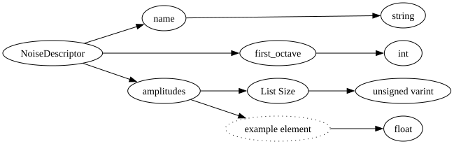

| Field Name | Field Type | Field Constraints | Field Notes |
|---|---|---|---|
| name | string | The string used to initialize the noise. Has no impact on the qualitative aspects of the generated values. | |
| first_octave | int | Governs the general frequency characteristics of the generated noise. Lower value results in noise with lower frequency content. | |
| amplitudes | vector<float> | <div style="padding-left: 0px;">MinItems = 1<br>MaxItems = 100</div> | Governs the attenuation of the first n octaves in the generated noise. |